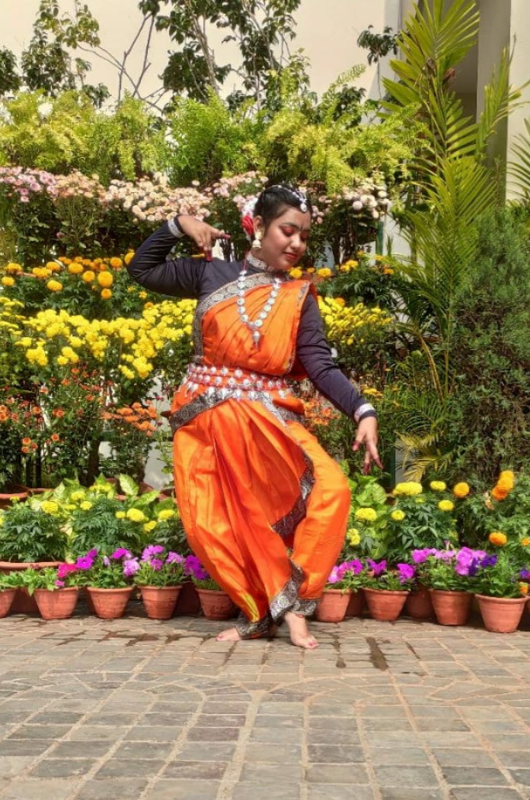
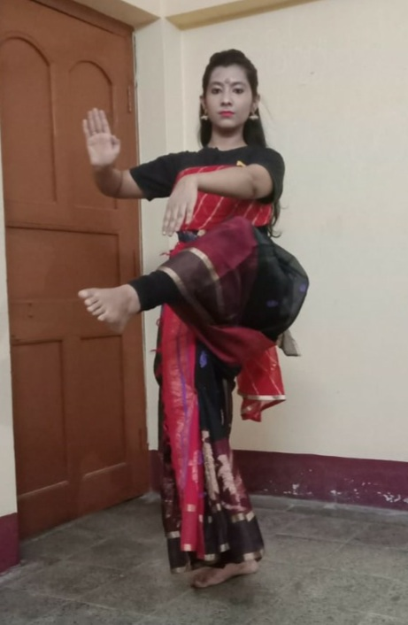
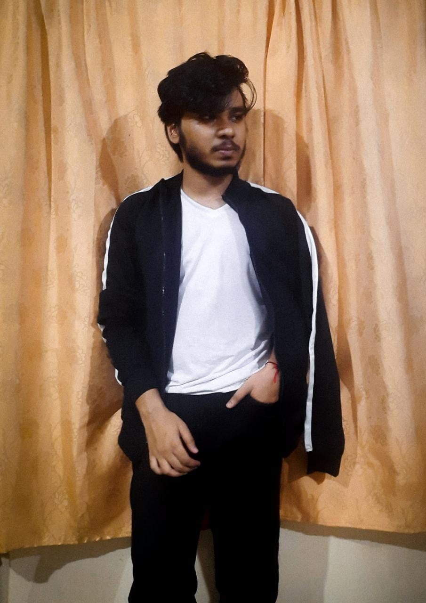
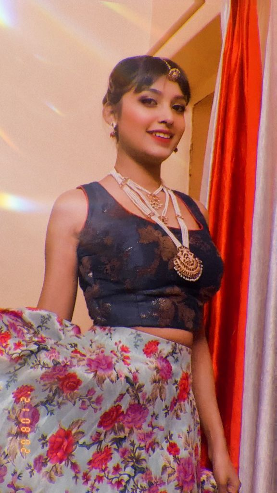
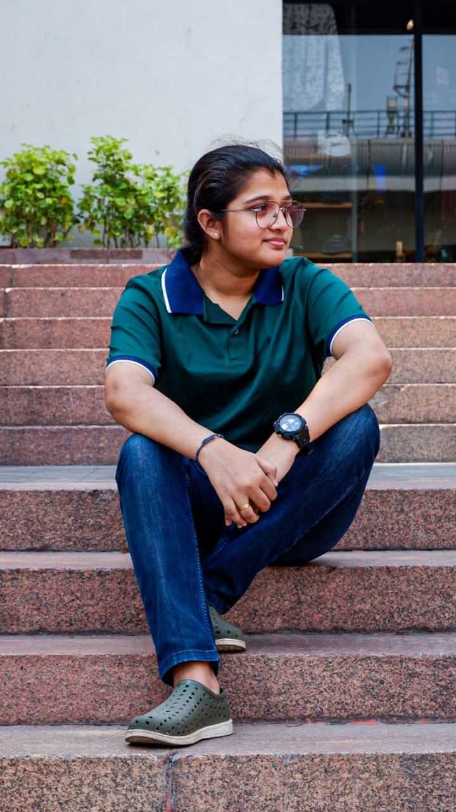
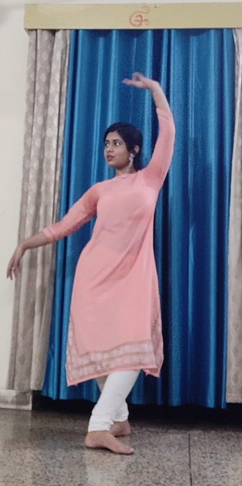
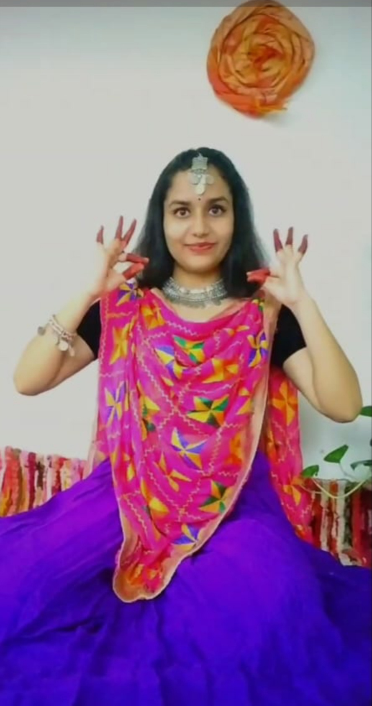

**move your feet with every tune of music**
ABOUT US
Hey Everyone, we welcome you all to the Dance Department of IN4MALS where we all are a family more than being a society only.We enjoy the steps more than dance and we focus on group development as well as individual perticipation. Here in our department we focus that all the members can develop their skills and show it to the world. You'll try and we will help you providing a stage to perform. Here you'll not only perform but will also feel every beat of dance and enjoy it. As mentioned before we work as a family, so it is our prime focus that all the members are bonded together and work together. Apart from formal talks we are ready to be a part of your happiness and pain, hence we'll have fun sessions where you all will enjoy and make strong bonds of friendship with each other. You can learn new skills from others as well as teach your skills to others so that we can grow together. Here we perform Classical, Bharatnatyam, Hip Hop, Freestyle, Bollywood and many more. We are fully sure that you'll enjoy each and every moment here. Do you know the best part here!! We don't force you for something, you can freely take part in your desired types of dance but we do push you to be better one day by day. Here you can gain new skills & can modify your own steps of dance too. Our members are very tallented & hard-working. With the help of our society they have already improved their skills. So we welcome you all to our society and will look forward for your joining. Get ready to explore and get limitless opportunities, high hopes, unbounded stage and promising friendship.
🔶🔶🔶
OUR DANCE STUDIO
Here in IN4MALS society we practice & encourage all the dance forms. We have displayed some of our works here some are solo performances & some are group performances. The performances include modern style, western style, classical, folk & bollywood styles of dance || 🔶The number of classical dances range from eight to more, depending on the source and scholar. The Sangeet Natak Academy recognizes eight – Bharatanatyam, Kathak, Kuchipudi, Odissi, Kathakali, Sattriya, Manipuri and Mohiniyattam. Scholars such as Drid Williams add Chhau, Yakshagana and Bhagavata Mela to the list. Classical dance has many styles. Indian classical dance Legends from the seven dance styles Bharatnatyam, Kathak, Kathakali, Kuchipudi, Manipuri, Mohinattyam and Odissi || 🔶Many different dances are done to country-western music. These dances include: Two Step, Waltz, Cowboy or Traveling Cha Cha, Polka Ten Step (also known as Ten Step Polka), Schottische, and other Western promenade dances, East Coast Swing, West Coast Swing, and Nightclub Two Step || 🔶Modern dance is a broad genre of western concert or theatrical dance which included dance styles such as ballet, folk, ethnic, religious, and social dancing; and primarily arose out of Europe and the United States in the late 19th and early 20th centuries. Some examples of modern styles of dance are Ballet. In the aspect of modern dances, it is characterized by floor work; turn-in of the legs; greater range of movement and body line; and pointe shoes but also bare feet. Burlesque,Ballroom Dance,Belly Dancing,Jazz are some famous classifications || 🔶Folk dance, generally, a type of dance that is a vernacular, usually recreational, expression of a past or present culture. The term folk dance was accepted until the mid-20th century. Then this and other categories of dance were questioned and their distinctions became subject to debate || 🔶Bollywood Dance style is a fusion of various dance styles. It includes Bharatanatyam, Kathak, Bhangra, Jazz, Hip-hop, Arabic, Western dance to name a few. Classical Indian dance incorporates the two basic elements of dance and expression. Bollywood hip-hop dance has recently acquired much attention.
So we will like to invite you to join our society if you also want to grow or enhance the magical skills of dance in you.
🔶🔶🔶
MEET THE DANCERS OF OUR SOCIETY

Suparna Roy Gupta
Hi, I'm Suparna Roy Gupta, the dance coordinator of IN4MALS society. I began my dance career at DR. RUMPA SINHA'S NATYALAYA from the age of 2yr. I am doing a junior diploma course in Bharatnatyam also from Prayag Sangeet Vishwavidyalaya. I have competed in many national level and state level competitions. I have also attended many seminars in state & national level also competed in many school level & state, national level competitions. Some of my other skills include contemporary, semi-classical and bollywood dance. Recently I'm co-ordinating the dance group of IN4MALS. I try to guide & motivate all the members in our dance society. What I think about Dance is ,it is a form of expression that brings people together, allows them to be creative in new ways, and is a fantastic way to escape the stresses and cares of everyday life. When I dance I am completely get released from the preoccupations and stresses of day to day life. Growth never comes from the comfort zone. Every time I dance or perform I feel like I am stepping into a new realm in which gives me an opportunity to grow and discover new things about my dance technique or even myself as a person. I enjoy growth, and performing is a wonderful catalyst in which this can happen. To know more about me, about the dance forms or to join with us visit my official instagram page.
Instagram Id: @_suparna13__

Adyasha Mohanty
Hi, I'm Adyasha Mohanty. I am a professionally trained dancer and started my journey in dancing at the age of 5 years. Ever Since I watched bollywood actors dancing in movies, I wanted to do that. All thanks to my parents who supported me and started giving me professional training since I was 4 years old. It's been more than 12-13 years since I am performing. I am professionally trained in Odissi but also perform in bollywood, semiclassical forms as well. Odissi is a beautiful dance form where we depict stories through postures,mudras and expressions. It has a very unique costume when it comes to attire. I have completed my 3rd year Odissi exams also and have an experience of performing for more than 12-13 years. I have competed in many national and international level programs as well. I'm here in IN4MALS members of our dance team since 1-2 months & already took part in 2 projects. IN4MALS society has already given me the chance to be a part of two projects which were done online because of the pandemic. I expect, as soon as things get normal, we'd meet offline, we will start performing on stage and my skills will be even more enhanced. To know more about me you can reach me out in my Instagram page. You can also visit my youtube channel to watch my videos & stay tunned.
Instagram Id: @_d.i.s.h.aa_ || Youtube channel: Adyasha Mohanty

Oshmita Sarkar
Hi, I'm Oshmita Sarkar. I'm a second year student of CSE. I have a specialization in Bharatanatyam and have also given performances in folk, fusion and regional dances. I have participated in various competitions of the IIT's and have made it to the finals. I also took part in the KORUS fest of KIIT and have been a part of various local projects of In4mals for its social media page and YouTube channel. For me, dance is like a spiritual purification. Every move, every beat creates an aura of positivity within me. I have been a passionate dancer since childhood and still continue the learning process as I believe that learning must never stop. In4mals has provided me with a platform to showcase my individuality as well as the tallents that I have achieved from continuous practices. I specialise in classical dance along with folk, bollywood and regional dances. I can firmly affirm that being a part of this society has helped me grow as a dancer and unleashed a new being within me.To know more about me reach me out at my official instagram page.
Instagram Id: @bridge_over_dreams

Satyajeet Das
Hi, My name is Styajeet Das. I am now in second year from CSSE branch. I am very much passionate in dancing & love to dance. I am not at all a professionally trained dancer. I've been performing on the stage since class 8. I usually use to do Hip Hop, Bollywood or Freestyle dancing. I've joined our society few months ago but have already taken part in few projects of dance and performed in various competitions with the help of that wide platform the IN4MALS provided me. My love for dance has brought me here. The feeling that the steps of dance gave me is beyond my imagination and cannot be described in words. IN4MALS gave me the perfect stage and opportunity to rise. It gave me the spark to continue my Dance after a break of two years I'm eger to learn more and improve my skills here.If you want to know more about me visit my official instagram page.
Instagram Id: @ satyajeet_das001

Antra Dey

Avantika Lenka

Shruti Nath

Utkarsha Anannya Samal

Sanjeevani Prashant Eache

Vagisha Mishra